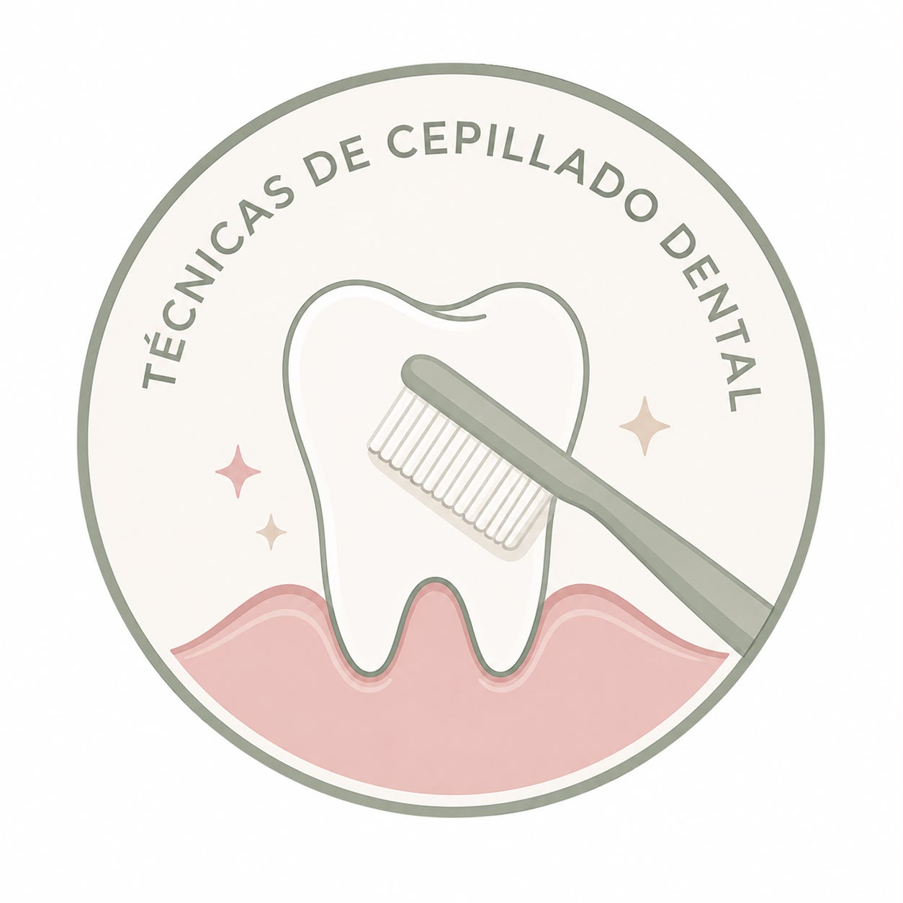
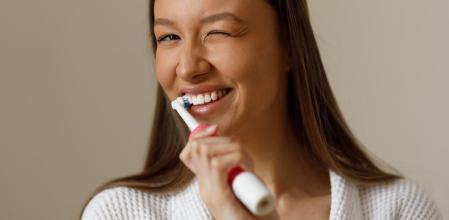
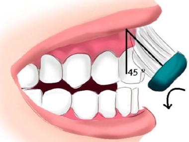
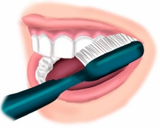
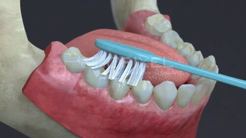

Tema 2
Cuida tu sonrisa,
un cepillado a la vez.
Aprende a cepillarte correctamente, proteger tus encías y elegir los productos de higiene oral adecuados para tu boca.

2 veces al día
Por la mañana y antes de dormir.
2 minutos
Dedica 20-30 segundos a cada zona de la boca.
Cerdas suaves
Limpian bien sin lastimar tus encías.
Técnicas de cepillado
Estas son algunas de las técnicas más recomendadas por su efectividad para remover placa sin dañar las encías.

Coloca el cepillo en un ángulo de 45° hacia el surco gingival y realiza movimientos vibratorios cortos y suaves, sin desplazar el cepillo de su lugar.
Ver en video ↓
Realiza las vibraciones de la técnica de Bass y añade un barrido desde la encía hacia la corona del diente.
Ver en video ↓
Apoya las cerdas sobre la encía y el cuello del diente. Realiza un movimiento suave y firme, de la encía hacia la corona.
Ver en video ↓Elige tu cepillo y tu pasta dental
Manual o eléctrico
- Manual: económico y eficaz si la técnica es correcta.
- Eléctrico: facilita remover placa, cómodo para quienes tienen menos destreza manual.
Elige el cepillo
- Cerdas suaves.
- Cabezal pequeño o mediano.
- Mango cómodo.
Elige tu pasta dental
- Con flúor — imprescindible.
- Para sensibilidad, si la necesitas.
- Para placa y encías, si tienes antecedentes.
Tanto el cepillo manual como el eléctrico pueden ser igual de eficaces — lo más importante es la técnica y la constancia.
Completa tu higiene oral
El cepillo no alcanza completamente los espacios entre los dientes — descubre qué recursos te ayudan a completar la limpieza.
Hilo dental
Introdúcelo con suavidad formando una letra C alrededor de cada diente.
Cepillo interdental
Ideal para espacios amplios, implantes o enfermedad periodontal.
Irrigador bucal
Ayuda a retirar residuos alrededor de brackets, implantes y prótesis.
Cepillo unipenacho
Limpia zonas difíciles, como alrededor de brackets o muelas del juicio.
Aprende con videos
Videos cortos para enseñarte de forma clara y práctica.
Video próximamente
Técnicas de cepilladoBass, Bass modificada y Stillman modificada: la posición del cepillo, los movimientos y sus diferencias.
Video próximamente
Productos de higiene oralQué recursos pueden ayudarte a completar tu higiene oral diaria, más allá del cepillo.
Video próximamente
¿Cuál cepillo elegir?Cómo decidir entre manual, eléctrico, interdental o unipenacho según tus necesidades.
Señales de alerta
Si notas alguno de estos signos, una valoración odontológica puede ayudarte — no esperes a que aparezca dolor.